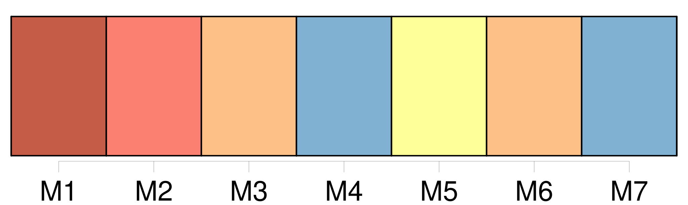

Longueur nb maillons : 12 mentions |
  |
À l'expiration d'un délai de deux cents jours à compter de [son] adoption, [une décision] lie les parties contractantes qui [l'] ont votée et qui n'ont pas notifié par écrit au secrétaire exécutif dans ce délai leur incapacité à accepter [cette décision] , sous réserve qu'à l'expiration de ce délai, les trois quarts des parties contractantes aient, soit voté [la décision] sans retirer leur acceptation, soit notifié par écrit au secrétaire exécutif qu'elles sont en mesure d'accepter [celle -ci]
[Cette décision] lie toute autre partie contractante qui a notifié par écrit au secrétaire exécutif qu'elle est en mesure d'accepter [la décision] , soit à compter de cette notification, soit à l'expiration d'un délai de deux cents jours après l'adoption de [la décision] , si cette date est postérieure. [1 phrases]
Une notification faite au secrétaire exécutif en vertu du paragraphe 2 du présent article peut indiquer qu'une partie contractante n'est pas en mesure d'accepter [une décision] pour ce qui concerne un ou plusieurs de ses territoires autonomes ou dépendants auxquels s'applique la convention. [1 phrases]
[Toutes les décisions adoptées par la Commission] comportent, en tant que de besoin, des dispositions précisant le calendrier de [leur] application. |

|
La ressource peut être téléchargée sur la page Ortolang
Si vous avez des questions ou vous voyez des erreurs, merci d'envoyer un mail à silvia.federzoni89@gmail.com
Site développé par S. Federzoni (contact)